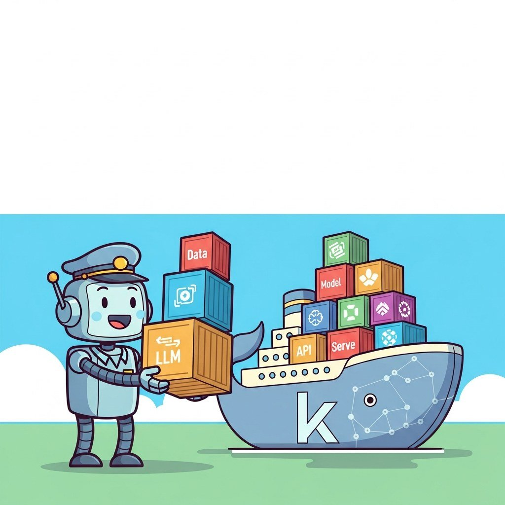

Big Picture
Production LLM serving runs on containers, and at scale, on Kubernetes. This chapter covers Docker fundamentals, writing Dockerfiles for ML workloads, Docker Compose for multi-service apps, containerizing inference servers (vLLM, TGI, Triton), and Kubernetes-native patterns for GPU scheduling and serving.
Sections in This Chapter
- 65.1 Docker Fundamentals: Images, Containers, and Volumes Docker packages applications and their dependencies into lightweight, portable units called containers.
- 65.2 Writing Dockerfiles for ML and LLM Projects A Dockerfile is the recipe that defines how to build a Docker image.
- 65.3 Docker Compose for Multi-Service AI Applications Real-world AI applications rarely consist of a single container.
- 65.4 Containerizing LLM Inference Servers LLM inference servers like vLLM, Text Generation Inference (TGI), and Ollama are designed to run inside containers.
- 65.5 Kubernetes-Native LLM Operations: Scheduling, Serving, and GPU Management Kubernetes has become the de facto platform for orchestrating LLM workloads in production, but GPU-intensive LLM training and serving have unique requirements that standard Kubernetes scheduling...